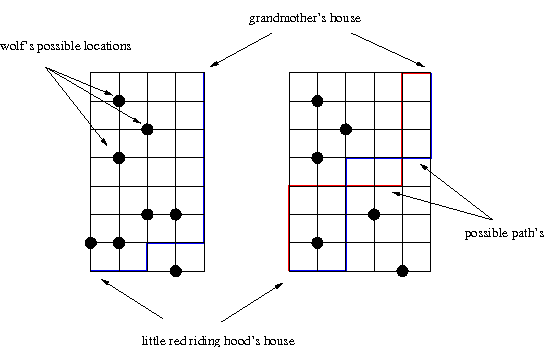

Little Red Riding Hood
You probably all know the fairy tale of Little Red Riding Hood and how she wanted to visit her grandmother, but on her way there met a wolf, finally got eaten by the wolf and was rescued in the end by a brave hunter. Now if Little Red Riding Hood hadn't met the wolf in the first place, she would have avoided a lot of hassle (she wouldn't have been eaten by the wolf and the brave hunter wouldn't have had to rescue her). That she met the wolf in the first place was partly due to her lack of information. She simply didn't know where she might encounter the wolf.
The network of roads connecting Little Red Riding Hood's house and her grandmother's house is a rectangular grid. Little Red Riding Hood's house is situated on the grid's lower left corner and her grandmother's house is at the grid's top right corner. Being particularly bright at math Little Red Riding Hood always wants to get to her grandmother using the shortest possible route. This entails that Little Red Riding Hood can only "move" to right or upwards on the grid. This ensures that she always uses a shortest route. Now if she had known the wolf's possible locations in advance, she might have chosen a path on which she doesn't meet the wolf.
Now given the size of the grid and the wolf's possible locations (weirdly enough the wolf can only meet her at the grid's intersections) compute the number of possible paths from Little Red Riding Hood's house to her grandmother's house under the restriction that Little Red Riding Hood can only move to the right and upwards and does not meet the wolf.

Input and Output
There will be several testcases. The grid's width w, 1 ≤ w ≤ 100, and grid's height h, 1 ≤ h ≤ 100, are on the first line. The last testcase will contain a 0 for height h and a 0 for the width w and should not be processed. In the next line there follows the number n, 0 ≤ n ≤ 100 of the wolf's possible locations. The next n lines contain two integers each. The first denoting the wolf's x, 0 ≤ x ≤ 100 coordinate, the second the wolf's y, 0 ≤ y ≤ 100 coordinate. Little Red Riding Hood's House is at the point (0,0) and the grandmother's house is at (w,h). The wolf cannot be at either house.
Output one line for each testcase. If there is more than one path between Little Red Riding Hood's house and the grandmother's house on which Little Red Riding Hood doesn't meet the wolf and only moves right and upwards, output the number of paths in the format:
There are X paths from Little Red Riding Hood's house to her grandmother's house.
If there is exactly one path print:
There is one path from Little Red Riding Hood's house to her grandmother's house.
Otherwise print:
There is no path.
The number of paths will always be ≤ 232-1.
Sample input
1 1
0
1 1
2
0 1
1 0
4 4
3
0 1
1 1
3 1
10 10
0
10 10
3
0 1
1 1
1 0
3 3
5
1 0
1 1
1 2
2 2
3 2
0 0
Sample output
There are 2 paths from Little Red Riding Hood's house to her grandmother's house.
There is no path.
There are 7 paths from Little Red Riding Hood's house to her grandmother's house.
There are 184756 paths from Little Red Riding Hood's house to her grandmother's house.
There is no path.
There is one path from Little Red Riding Hood's house to her grandmother's house.
|